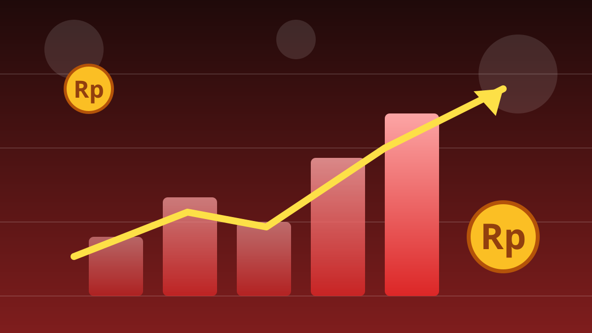

1 / 6

💰 EKONOMI
IHSG Ambrol, Level 6.000 Jebol
Senin (12/10) bursa merah semua — IHSG anjlok dalam dan asing ramai-ramai jualan. Apa pemicunya? Geser →
2 / 6
📉
Sesi I Anjlok 1,94%
IHSG menutup sesi I Senin (12/10) di 5.975,78, turun 117,97 poin (-1,94%), bergerak di rentang 5.971–6.128. Padahal pagi sempat dibuka menguat ke 6.109,32 (+0,26% dari penutupan Jumat 6.093,76) dan menyentuh 6.128,72 — tapi tekanan jual masif muncul sekitar pukul 09.14 WIB. Sesi I mencatat 537 saham turun, 159 naik, 95 stagnan, dengan nilai transaksi Rp6,47 triliun.
3 / 6
💰
Asing Net Sell Rp166 Miliar
Investor asing mencatat jual bersih Rp166,22 miliar di sesi I (pembelian Rp1,58 triliun vs penjualan Rp1,75 triliun, data Stockbit via CNBC Indonesia). Saham paling banyak dibuang: BUMI Rp44,4 miliar (sahamnya -4,44% ke Rp172), BBCA Rp38,65 miliar, DEWA Rp23,93 miliar, DSSA Rp19,34 miliar, dan INET Rp15,94 miliar.
4 / 6
🔄
GOTO Diborong tapi Malah Ambruk
Sebaliknya, asing paling banyak memborong GOTO (Rp133 miliar), ASII (Rp48,53 miliar), dan ERAA (Rp12,35 miliar). Ironisnya, saham GOTO justru jatuh 10% ke level Rp27. Menurut media, penutupan hari itu IHSG anjlok lebih dari 2 persen dan jebol ke bawah 6.000 — level psikologis yang ditembus sore ini.
5 / 6
🌍
Kenapa Bisa Ambrol?
Sentimen negatif bertubi-tubi: konflik Houthi vs Arab Saudi memanas (serangan ke bandara Riyadh dan fasilitas Aramco), investor wait-and-see jelang data inflasi AS 14 Oktober, imbal hasil obligasi AS tinggi dan dolar menguat. Dari dalam negeri, review MSCI yang mengancam status Indonesia ke frontier market ikut menekan pasar.
6 / 6
🤔
Efeknya ke lo apa?
Portofolio lo merah? Jangan panik cut-loss gegara FUD — buat yang belum punya saham, koreksi begini = fase "diskon", tapi riset fundamental dulu. Rupiah juga ikut melemah ke Rp17.883 per dolar AS, jadi harga barang impor bisa merangkak naik.